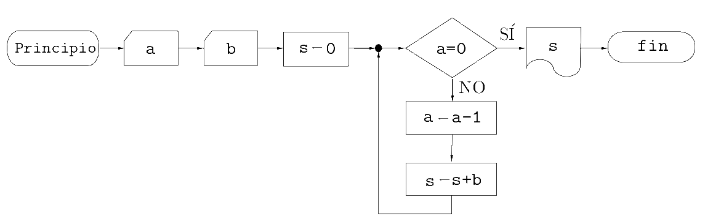
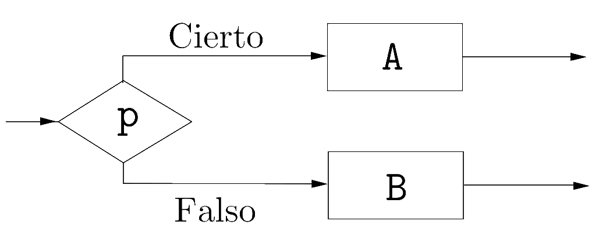
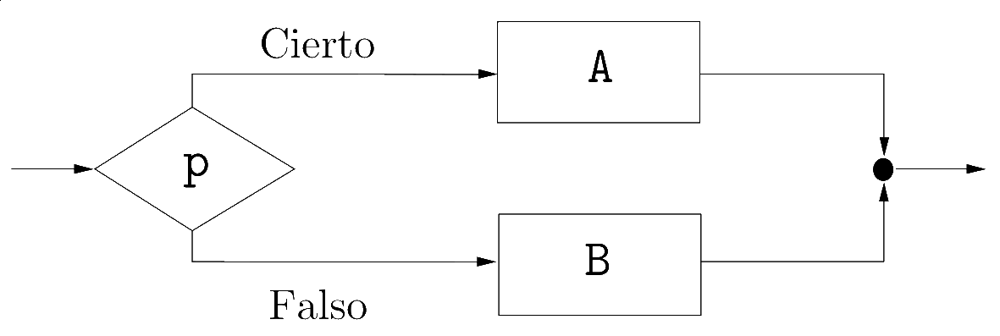
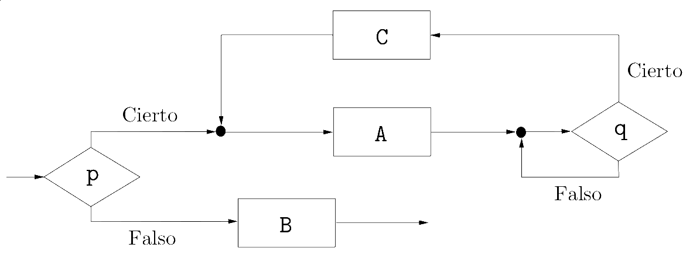
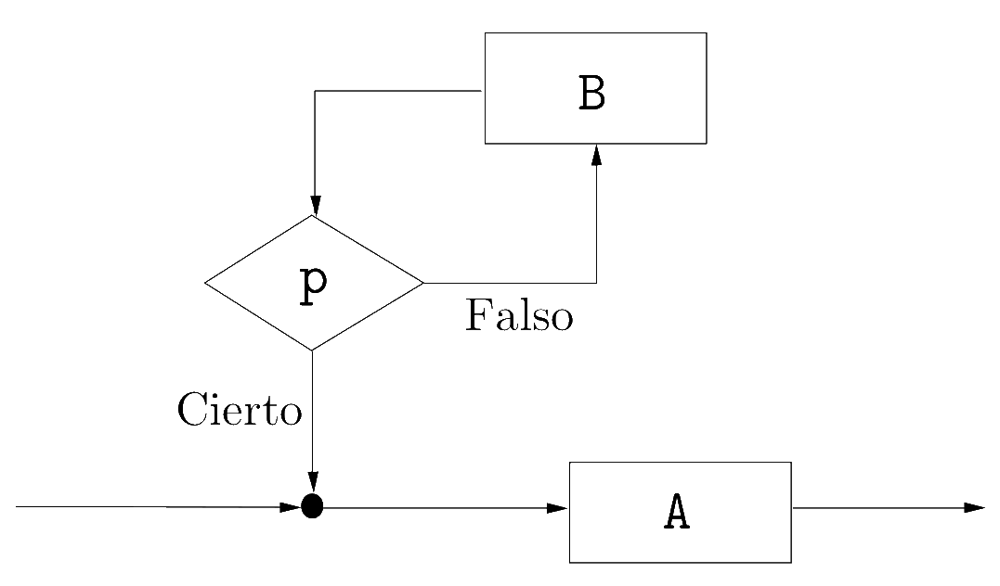
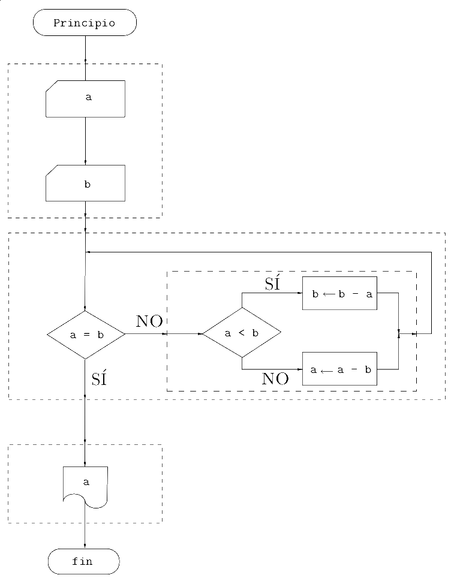

Programación estructurada
Ricardo Pérez López
IES Doñana, curso 2020/2021
1 Aspectos teóricos de la programación estructurada
1.1 Programación estructurada
La programación estructurada es una técnica de programación cuyo objetivo es, esencialmente, la obtención de programas fiables y fácilmente mantenibles.
Su estudio puede dividirse en dos partes bien diferenciadas:
Por una parte, el estudio conceptual se centra en ver qué se entiende por programa estructurado para estudiar con detalle sus características fundamentales.
Por otra parte, dentro del enfoque práctico se presentará la metodología de refinamientos sucesivos que permite construir programas estructurados paso a paso, detallando cada vez más sus acciones componentes.
Las ideas que dieron lugar a la programación estructurada ya fueron expuestas por E. W. Dijkstra en 1965, aunque el fundamento teórico está basado en los trabajos de Böhm y Jacopini publicados en 1966.
La programación estructurada surge como respuesta a los problemas que aparecen cuando se programa sin una disciplina y unos límites que marquen la creación de programas claros y correctos.
Un programador disciplinado crearía programas fáciles de leer. Por ejemplo, el siguiente programa que calcula el producto de dos números:

En cambio, un programador indisciplinado crearía programas más difíciles de leer:

Si un programa se escribe de cualquier manera, aun siendo correcto desde el punto de vista de su funcionamiento, puede resultar engorroso, críptico, ilegible y casi imposible de modificar.

Lo que hay que hacer, en primer lugar, es impedir que el programador pueda escribir programas de cualquier manera, y para ello hay que restringir sus opciones a la hora de construir programas de forma que el diagrama resultante sea fácil de leer, entender y mantener.
Ese diagrama, una vez terminado, debe estar construido combinando sólo unos pocos tipos de bloques y cumpliendo una serie de restricciones.
1.2 Programa restringido
- Un programa restringido es aquel que se construye combinando únicamente los tres siguientes bloques:
Acción, que sirve para representar una instrucción (por ejemplo: de lectura, escritura, asignación…).
Condición, que sirve para bifurcar el flujo del programa dependiendo del valor (verdadero o falso) de una expresión lógica.
Agrupamiento, que sirve, como su nombre indica, para agrupar lı́neas de flujo con distintas procedencias.
1.3 Programa propio
Se dice que un programa restringido es un programa propio (o limpio) si reúne las tres condiciones siguientes:
Todo bloque posee un único punto de entrada y otro único punto de salida.
Para cualquier bloque, existe al menos un camino desde la entrada hasta él y otro camino desde él hasta la salida.
No existen bucles infinitos.
Estas condiciones restringen el concepto de programa de modo que sólo se permite trabajar con aquéllos que están diseñados mediante el uso apropiado del agrupamiento y sin bloques superfluos o formando bucles sin salida.
Este es un ejemplo de un programa que no es propio por no tener una única salida:

Agrupando las salidas se obtiene un programa propio:

- Aquí se observa otro programa que no es propio, ya que existen bloques (los A, C y q) que no tienen un camino hasta la salida; si el programa llegara hasta esos bloques se bloquearía, pues no es posible terminar la ejecución:

- Aquí aparece un programa que contiene bloques inaccesibles desde la entrada del diagrama:

1.4 Estructura
Una estructura es una construcción sintáctica (o un bloque constructivo) que se puede anidar completamente dentro de otra.
Eso significa que, dadas dos estructuras cualesquiera, o una está incluida completamente dentro de la otra, o no se tocan en absoluto.
Por tanto, los bordes de dos estructuras nunca pueden cruzarse:
1.5 Programa estructurado
Un programa estructurado es un programa construido combinando las siguientes estructuras (llamadas estructuras de control):
La secuencia de dos acciones A y B.
La selección entre dos acciones A y B dependiendo de un predicado p.
La iteración, que repite una acción A dependiendo del valor de verdad de un predicado de control p.
A su vez, tanto A como B pueden ser, o bien acciones simples, o bien una cualquiera de las estructuras anteriores, recursivamente.

En pseudocódigo:
Secuencia:
A
BSelección:
si p entonces
A
sino
BIteración:
mientras p hacer
A
Cada una de las acciones que aparecen en una estructura pueden ser, a su vez, estructuras.
Esto es así porque se considera que una estructura es, también, una acción (compuesta, a diferencia de las acciones simples).
Por tanto, una estructura puede aparecer en cualquier parte donde se espere una acción.
Resumiendo, en un programa podemos tener dos tipos de acciones:
Acciones simples
Estructuras de control, que son acciones compuestas formadas a su vez por otras acciones (que podrán ser, a su vez, simples o compuestas, recursivamente).
Por consiguiente, todo programa puede verse como una única acción, simple o compuesta por otras.
- Un programa estructurado equivalente al del ejemplo anterior, pero mucho más claro, sería:

leer a
leer b
mientras a \mathrel{\char`≠} b hacer
si a < b entonces
b \leftarrow b - a
sino
a \leftarrow a - b
escribir a
fin
1.5.1 Ventajas de los programas estructurados
Las principales ventajas de los programas estructurados frente a los no estructurados son:
Son más fáciles de entender, ya que básicamente se pueden leer de arriba abajo de estructura en estructura como cualquier otro texto sin tener que estar continuamente saltando de un punto a otro del programa.
Es más fácil demostrar que son correctos, ya que las estructuras anidadas pueden verse como cajas negras, lo que facilita trabajar a diferentes niveles de abstracción.
Se reducen los costes de mantenimiento.
Aumenta la productividad del programador.
Los programas quedan mejor documentados internamente.
1.6 Teorema de Böhm-Jacopini
El teorema de Böhm-Jacopini, también llamado teorema de la estructura, garantiza que todo programa propio se puede estructurar.
Se enuncia formalmente así:
Teorema de la estructura:
Todo programa propio es equivalente a un programa estructurado.
Por tanto, los programas estructurados son suficientemente expresivos como para expresar cualquier programa razonable.
Y además, por su naturaleza estructurada resultan programas más sencillos y claros.
En consecuencia, no hay excusa para no estructurar nuestros programas.
2 Estructuras básicas de control
2.1 Secuencia
La estructura secuencial en Python consiste sencillamente en poner cada sentencia una tras otra al mismo nivel de indentación.
No requiere de ninguna otra sintaxis particular ni palabras clave.
Una secuencia de sentencias actúa sintácticamente como si fuera una sola sentencia; por lo tanto, en cualquier lugar del programa donde se pueda poner una sentencia, se puede poner una secuencia de sentencias (que actuarían como una sola formando un bloque).
Esto es así porque, como vimos, toda acción puede ser simple o compuesta (una estructura) y, por tanto, toda estructura es también una sentencia (actúa como si fuera una única sentencia pero compuesta por otras).
Por tanto, en cualquier parte donde se pueda poner una sentencia, se puede poner una estructura.
La sintaxis es, sencillamente:
⟨secuencia⟩ ::=
⟨sentencia⟩
⟨sentencia⟩*
- Las sentencias deben estar todas al mismo nivel de indentación (misma posición horizontal o columna).
Concepto fundamental:
En Python, la estructura del programa viene definida por la indentación del código.
Ejemplo:
Estas cuatro sentencias, al estar todas al mismo nivel de indentación, actúan como una sola sentencia en bloque (forman una estructura secuencial) y se ejecutan en orden de arriba abajo.
A partir de ahora, tenemos que una sentencia puede ser una sentencia simple o una sentencia compuesta (una estructura):
⟨sentencia⟩ ::= ⟨sentencia_simple⟩ | ⟨estructura⟩
⟨estructura⟩ ::= ⟨secuencia⟩
⟨secuencia⟩ ::=
⟨sentencia⟩
⟨sentencia⟩*
2.2 Selección
La selección (o estructura alternativa) en Python tiene la siguiente sintaxis:
⟨selección⟩ ::=
if⟨condición⟩:
⟨sentencia⟩
[elif⟨condición⟩:
⟨sentencia⟩]*
[else:
⟨sentencia⟩]
Ejemplos:
Ahora nuestra gramática se amplía:
⟨sentencia⟩ ::= ⟨sentencia_simple⟩ | ⟨estructura⟩
⟨estructura⟩ ::= ⟨secuencia⟩ | ⟨selección⟩
⟨selección⟩ ::=
if⟨condición⟩:
⟨sentencia⟩
[elif⟨condición⟩:
⟨sentencia⟩]*
[else:
⟨sentencia⟩]
2.3 Iteración
La iteración (estructura iterativa o repetitiva) en Python tiene la siguiente sintaxis:
⟨iteración⟩ ::=
while⟨condición⟩:
⟨sentencia⟩A esta estructura se la llama bucle while o, simplemente, bucle.
La ⟨sentencia⟩ es el cuerpo del bucle.
Cada ejecución del cuerpo del bucle se denomina iteración.
Ahora ampliamos de nuevo nuestra gramática:
⟨sentencia⟩ ::= ⟨sentencia_simple⟩ | ⟨estructura⟩
⟨estructura⟩ ::= ⟨secuencia⟩ | ⟨selección⟩ | ⟨iteración⟩
⟨iteración⟩ ::=
while⟨condición⟩:
⟨sentencia⟩
2.4 Otras sentencias de control
2.4.1 break
La sentencia
breakfinaliza el bucle que la contiene.El flujo de control del programa pasa a la sentencia inmediatamente posterior al cuerpo del bucle.
Si la sentencia
breakse encuentra dentro de un bucle anidado (un bucle dentro de otro bucle), finalizará el bucle más interno.produce:
s t r Fin
2.4.2 continue
2.4.3 Excepciones
Incluso aunque una sentencia o expresión sea sintácticamente correcta, puede provocar un error cuando se intente ejecutar o evaluar.
Los errores detectados durante la ejecución del programa se denominan excepciones y no tienen por qué ser incondicionalmente fatales si se capturan y se gestionan adecuadamente.
En cambio, la mayoría de las excepciones no son gestionadas por el programa y, por consiguiente, provocan mensajes de error y la terminación de la ejecución del programa.
Por ejemplo:
>>> 10 * (1 / 0) Traceback (most recent call last): File "<stdin>", line 1, in <module> ZeroDivisionError: division by zero >>> 4 + spam * 3 Traceback (most recent call last): File "<stdin>", line 1, in <module> NameError: name 'spam' is not defined >>> '2' + 2 Traceback (most recent call last): File "<stdin>", line 1, in <module> TypeError: Can't convert 'int' object to str implicitlyLa última línea del mensaje de error indica qué ha ocurrido.
Hay distintos tipos de excepciones y ese tipo se muestra como parte del mensaje: los tipos del ejemplo anterior son
ZeroDivisionError,NameErroryTypeError.El resto de la línea proporciona detalles sobre el tipo de excepción y qué lo causó.
2.4.3.1 Gestión de excepciones
Es posible escribir programas que gestionen excepciones concretas.
Para ello se utiliza una estructura de control llamada
try/except.La sintaxis es:
⟨gestión_excepciones⟩ ::=
try:
⟨sentencia⟩
(except[⟨excepcion⟩ [as⟨identificador⟩]]:
⟨sentencia⟩)^+
[else:
⟨sentencia⟩]
[finally:
⟨sentencia⟩]donde:
⟨excepcion⟩ ::= ⟨nombre_excepcion⟩
|(⟨nombre_excepcion⟩(,⟨nombre_excepcion⟩)*)
Su funcionamiento es el siguiente:
Se intenta ejecutar el bloque de sentencias del
try.Si durante su ejecución no se levanta ninguna excepción, se saltan los
excepty se ejecutan las sentencias delelse(si existe).Si se levanta alguna excepción, se busca (por orden de arriba abajo) algún
exceptque cuadre con el tipo de excepción que se la lanzado y, si se encuentra, se ejecutan sus sentencias asociadas.Finalmente, y en cualquier caso (se haya levantado alguna excepción o no), se ejecutan las sentencias del
finally(si existe).
Por ejemplo, el siguiente programa pide al usuario que introduzca un número entero por la entrada. Si el dato introducido es correcto (es un número entero), lo muestra a la salida multiplicado por tres y dice que la cosa acabó bien. Si no, muestra un mensaje de advertencia:
En cualquiera de los dos casos, siempre acaba diciendo
Fin.
- Y volvemos a ampliar de nuevo nuestra gramática:
⟨estructura⟩ ::= ⟨secuencia⟩
| ⟨selección⟩
| ⟨iteración⟩
| ⟨gestión_excepciones⟩
⟨gestión_excepciones⟩ ::=
try:⟨sentencia⟩
(
except [⟨excepcion⟩ [as ⟨identificador⟩]]:⟨sentencia⟩)^+
[
else:⟨sentencia⟩]
[
finally:⟨sentencia⟩]
2.4.4 Gestores de contexto
3 Metodología de la programación estructurada
3.1 Diseño descendente por refinamiento sucesivo
El diseño descendente es la técnica que permite descomponer un problema complejo en problemas más sencillos, realizándose esta operación de forma sucesiva hasta llegar al mínimo nivel de abstracción en el cual se pueden codificar directamente las operaciones en un lenguaje de programación estructurado.
Con esta técnica, los programas se crean en distintos niveles de refinamiento, de forma que cada nuevo nivel define la solución de forma más concreta y subdivide las operaciones en otras menos abstractas.
Los programas se diseñan de lo general a lo particular por medio de sucesivos refinamientos o descomposiciones que nos van acercando a las instrucciones finales del programa.
El último nivel permite la codificación directa en un lenguaje de programación.

3.2 Recursos abstractos
Descomponer un programa en términos de recursos abstractos consiste en descomponer una determinada acción compleja en un número de acciones mas simples, capaces de ser ejecutadas por un ordenador, y que constituirán sus instrucciones.
Es el complemento perfecto para el diseño descendente y el que nos proporciona el método a seguir para obtener un nuevo nivel de refinamiento a partir del anterior.
Se basa en suponer que, en cada nivel de refinamiento, todos los elementos (instrucciones, expresiones, funciones, etc.) que aparecen en la solución están ya disponibles directamente en el lenguaje de programación, aunque no sea verdad.
Esos elementos o recursos se denominan abstractos porque los podemos usar directamente en un determinado nivel de refinamiento sin tener que saber cómo funcionan realmente por dentro, o incluso si existen realmente. Nosotros suponemos que sí existen y que hacen lo que tienen que hacer sin preocuparnos del cómo.
En el siguiente refinamiento, aquellos elementos que no estén implementados ya directamente en el lenguaje se refinarán, bajando el nivel de abstracción y acercándonos cada vez más a una solución que sí se pueda implementar en el lenguaje.
El refinamiento acaba cuando la solución se encuentra completamente definida usando los elementos del lenguaje de programación (ya no hay recursos abstractos).
3.3 Ejemplo
Supongamos que queremos escribir un programa que muestre una tabla de multiplicar de tamaño n \times n.
Por ejemplo, para n = 10 tendríamos:
\begin{matrix} 1 & 2 & 3 & \cdots & 10 \\ 2 & 4 & 6 & \cdots & 20 \\ 3 & 6 & 9 & \cdots & 30 \\ \vdots & \vdots & \vdots & \ddots & \vdots \\ 10 & 20 & 30 & \cdots & 100 \end{matrix}
Una primera versión (burda) del programa podría ser:
inicio
leer n
construir la tabla de n \times n
findonde el programa se plantea como una secuencia de dos acciones: preguntar el tamaño de la tabla deseada y construir la tabla propiamente dicha.
La instrucción leer n ya está suficientemente refinada (se puede traducir a un lenguaje de programación) pero la segunda no (por tanto, es un recurso abstracto).
La construcción de la tabla se puede realizar fácilmente escribiendo en una fila los múltiplos de 1, en la fila inferior los múltiplos de 2, y así sucesivamente hasta que lleguemos a los múltiplos de n.
Por tanto, el siguiente paso es refinar la instrucción abstracta construir la tabla de n \times n, creando un nuevo nivel de refinamiento:
inicio
leer n
# construir la tabla de n \times n:
i \leftarrow 1
mientras i \leq n:
escribir la fila de i
i \leftarrow i + 1
findonde ahora aparece la acción escribir la fila de i, que escribe cada una de las filas de la tabla, y que habrá que refinar porque no se puede traducir directamente al lenguaje de programación.
En este (último) nivel refinamos la acción que nos falta, quedando:
inicio
leer n
{ construir la tabla de n \times n: }
i \leftarrow 1
mientras i \leq n:
{ escribir la fila de i: }
j \leftarrow 1
mientras j \leq n:
escribir i \times j
j \leftarrow j + 1
escribir un salto de línea
i \leftarrow i + 1
fin
Ese programa es directamente traducible a Python:
O mejor aún:
4 Funciones imperativas
4.1 Definición de funciones imperativas
En programación imperativa también podemos definir funciones.
Al igual que ocurre en programación funcional, una función en programación imperativa es una construcción sintáctica que acepta argumentos y produce un resultado.
Pero a diferencia de lo que ocurre en programación funcional, una función en programación imperativa contiene sentencias.
Las funciones en programación imperativa conforman los bloques básicos que nos permiten descomponer un programa en partes que se combinan entre sí.
Todavía podemos construir funciones mediante expresiones lambda, pero las funciones imperativas tienen ventajas:
Podemos escribir sentencias dentro de las funciones imperativas.
Podemos escribir funciones que no devuelvan ningún resultado porque su cometido es provocar algún efecto lateral.
La definición de una función imperativa tiene la siguiente sintaxis:
⟨definición_función⟩ ::=
def⟨nombre⟩([⟨lista_parámetros⟩]):
⟨cuerpo⟩donde:
⟨lista_parámetros⟩ ::=identificador[,identificador]*
⟨cuerpo⟩ ::= ⟨sentencia⟩Por ejemplo:
La definición de una función imperativa es una sentencia compuesta, es decir, una estructura (como las estructuras de control
if,while, etc.).Por tanto, puede aparecer en cualquier lugar del programa donde pueda haber una sentencia.
Como en cualquier otra estructura, las sentencias que contiene (las que van en el cuerpo de la función) van indentadas (o sangradas) dentro de la definición de la función.
Por tanto (de nuevo como en cualquier otra estructura), el final de la función se deduce al encontrarse una sentencia menos indentada que el cuerpo, o bien el final del script.
En consecuencia, nuestra gramática se vuelve a ampliar:
⟨sentencia⟩ ::= ⟨sentencia_simple⟩ | ⟨estructura⟩
⟨estructura⟩ ::= ⟨secuencia⟩
| ⟨selección⟩
| ⟨iteración⟩
| ⟨gestión_excepciones⟩
| ⟨definición_función⟩
⟨definición_función⟩ ::=
def⟨nombre⟩([⟨lista_parámetros⟩]):
⟨sentencia⟩
4.2 Llamadas a funciones imperativas
Cuando se llama a una función imperativa, ocurre lo siguiente (en este orden):
Como siempre que se llama a una función, se crea un nuevo marco en el entorno (que contiene los parámetros así como las ligaduras y variables locales a su ámbito) y se almacena en la pila de control su registro de activación.
Se pasan los argumentos de la llamada a los parámetros de la función.
Recordemos que en Python se sigue el orden aplicativo (primero se evalúan los argumentos y después se pasan a los parámetros correspondientes).
El flujo de control del programa se transfiere al bloque de sentencias que forman el cuerpo de la función y se ejecuta éste.
Cuando se finaliza la ejecución de las sentencias que forman el cuerpo de la función:
Se genera su valor de retorno (en breve veremos cómo).
Se saca su registro de activación de la pila.
Se devuelve el control de la ejecución a la línea de código que llamó a la función.
Se sustituye, en dicha línea, la llamada a la función por su valor de retorno.
Se continúa la ejecución del programa desde ese punto.
Por ejemplo:
Produce la siguiente salida:
Hola Pepe Encantado de saludarte El gusto es mío Hola Juan Encantado de saludarte Hasta luego, Lucas Sayonara, baby
Una función puede llamar a otra.
Por ejemplo, este programa:
Produce la siguiente salida:
Hola Pepe Me llamo Ricardo Encantado de saludarte El gusto es mío Hola Juan Me llamo Ricardo Encantado de saludarte Hasta luego, Lucas Sayonara, baby
La función debe estar definida antes de poder llamarla.
Eso significa que el intérprete de Python debe ejecutar el
defde una función antes de que el programa pueda llamar a esa función.Por ejemplo, el siguiente programa lanzaría el error «NameError: name ‘hola’ is not defined» en la línea 1:
En cambio, este funcionaría perfectamente:
4.3 Paso de argumentos
En el marco de la función llamada se almacenan, entre otras cosas, los parámetros de la función.
Al principio, los parámetros contendrán los valores de los argumentos que se hayan pasado a la función al llamar a la misma.
Existen distintos mecanismos de paso de argumentos, dependiendo del lenguaje de programación utilizado.
Los más conocidos son los llamados paso de argumentos por valor y paso de argumentos por referencia.
En Python existe un único mecanismo de paso de argumentos llamado paso de argumentos por asignación, que en la práctica resulta bastante sencillo.
Consiste en suponer que el argumento se asigna al parámetro correspondiente, teniendo en cuenta todo lo relacionado con los alias de variables, inmutabilidad, mutabilidad, etcétera.
Por ejemplo:
En la línea 5 se asigna a
personael valorManolo(como si se hicierapersona = Manolo).En la línea 7 se asigna a
personael valor dex, como si se hicierapersona = x, lo que sabemos que crea un alias (que no afectaría ya que el valor pasado es una cadena y, por tanto, inmutable).
En caso de pasar un argumento mutable:
La función es capaz de cambiar el estado interno de la lista que se ha pasado como argumento porque:
Al llamar a la función, el argumento
listase pasa a la función asignándola al parámetrolcomo si hubiera hechol = lista.Eso hace que ambas variables sean alias una de la otra (se refieren al mismo objeto).
Por tanto, la función está modificando la misma variable que se ha pasado como argumento (
lista).
4.4 La sentencia return
Para devolver el resultado de la función al código que la llamó, hay que usar una sentencia
return.Cuando el intérprete encuentra una sentencia
returndentro de una función:se finaliza la ejecución de la función,
se devuelve el control al punto del programa en el que se llamó a la función y
la función devuelve como resultado el valor de retorno definido en la sentencia
return.
Por ejemplo:
La función se define en las líneas 1–2. El intérprete lee la definición de la función pero no ejecuta las sentencias de su cuerpo en ese momento (lo hará cuando se llame a la función).
En la línea 6 se llama a la función
sumapasándole como argumentos los valores deayb, asignándoseles axey, respectivamente.Dentro de la función, se calcula la suma
x + yy la sentenciareturnfinaliza la ejecución de la función, devolviendo el control al punto en el que se la llamó (la línea 6) y haciendo que su valor de retorno sea el valor calculado en la suma anterior (el valor de la expresión que acompaña alreturn).
El valor de retorno de la función sustituye a la llamada a la función en la expresión en la que aparece dicha llamada, al igual que ocurre con las expresiones lambda.
Por tanto, una vez finalizada la ejecución de la función, la línea 6 se reescribe sustituyendo la llamada a la función por su valor.
Si, por ejemplo, suponemos que el usuario ha introducido los valores
5y7en las variablesayb, respectivamente, tras finalizar la ejecución de la función tendríamos que la línea 6 quedaría:y la ejecución del programa continuaría por ahí.
También es posible usar la sentencia
returnsin devolver ningún valor.En ese caso, su utilidad es la de finalizar la ejecución de la función en algún punto intermedio de su código.
Pero en Python todas las funciones devuelven algún valor.
Lo que ocurre en este caso es que la función devuelve el valor
None:
Cuando se alcanza el final del cuerpo de una función sin haberse ejecutado antes ninguna sentencia
return, es como si la última sentencia del cuerpo de la función fuese unreturnsin valor de retorno.Por ejemplo:
equivale a:
Esa última sentencia
returnnunca es necesario ponerla ya que la ejecución de una función termina automáticamente (y retorna al punto donde se la llamó) cuando ya no quedan más sentencias que ejecutar en su cuerpo.
4.5 Ámbito de variables
La función
sumase podría haber escrito así:y el efecto final habría sido el mismo.
La variable
resque aparece en el cuerpo de la función es una variable local y sólo existe dentro de la función. Por tanto, esto sería incorrecto:Fuera de la función, la variable
resno está definida en el entorno (que está formado sólo por el marco global) y por eso da error en la línea 6.
Eso significa que se crea un nuevo marco en el entorno que contendrá, en principio, los parámetros, las variables locales y las ligaduras locales a la función.


suma4.5.1 Variables locales
Al igual que pasa con las expresiones lambda, las definiciones de funciones generan un nuevo ámbito.
Tanto los parámetros como las variables y las ligaduras que se crean en el cuerpo de la función son locales a ella, y por tanto sólo existen dentro de ella.
Su ámbito es el cuerpo de la función a la que pertenecen.
Los parámetros se pueden usar libremente en cualquier parte del cuerpo de la función porque ya se les ha asignado un valor.
En cambio, se produce un error
UnboundLocalErrorsi se intenta usar una variable local antes de asignarle un valor:
4.5.2 Variables globales
Desde dentro de una función es posible usar variables globales, ya que se encuentran en el entorno de la función.
Se puede acceder al valor de una variable global directamente:
Pero para poder modificar una variable global es necesario que la función la declare previamente como global.
De no hacerlo así, el intérprete supondría que el programador quiere crear una variable local que tiene el mismo nombre que la global:
Como en Python no existen las declaraciones de variables, el intérprete tiene que averiguar por sí mismo qué ámbito tiene una variable.
Lo hace con una regla muy sencilla:
Si hay una asignación a una variable dentro de una función, esa variable se considera local.
El siguiente código genera un error «UnboundLocalError: local variable ‘x’ referenced before assignment». ¿Por qué?
Como la función asigna un valor a
x, Python considera quexes local.Pero en la expresión
x + 4, la variablexaún no tiene ningún valor asignado, por lo que genera un error «variable localxreferenciada antes de ser asignada».
4.5.2.1 global
Para informar al intérprete que una determinada variable es global, se usa la sentencia
global:
Si la variable global no existe en el momento de realizar la asignación, se crea. Por tanto, una función puede crear nuevas variables globales usando
global:
Las reglas básicas de uso de la sentencia
globalen Python son:Cuando se crea una variable dentro de una función (asignándole un valor), por omisión es local.
Cuando se crea una variable fuera de una función, por omisión es global (no hace falta usar la sentencia
global).Se usa la sentencia
globalpara cambiar el valor de una variable global dentro de una función (si la variable global no existía previamente, se crea durante la asignación).El uso de la sentencia
globalfuera de una función no tiene ningún efecto.La sentencia
globaldebe aparecer antes de que se use la variable global correspondiente.
4.5.2.2 Efectos laterales
Cambiar el estado de una variable global es uno de los ejemplos más claros y conocidos de los llamados efectos laterales.
Recordemos que una función tiene (o provoca) efectos laterales cuando provoca cambios de estado observables desde el exterior de la función, más allá de devolver su valor de retorno. Típicamente:
Cuando cambia el valor de una variable global
Cuando cambia un argumento mutable
Cuando realiza una operación de entrada/salida
Una función que provoca efectos laterales es una función impura, a diferencia de las funciones puras, que no tienen efectos laterales.
Una función también puede ser impura si su valor de retorno depende de algo más que de sus argumentos (p. ej., de una variable global).
Un ejemplo de función impura (con un efecto lateral provocado por una operación de entrada/salida) podría ser:
def suma(x, y): res = x + y print('La suma vale', res) return res resultado = suma(4, 3) + suma(8, 5) print(resultado)Cualquiera que no sepa cómo está construida internamente la función
suma, se podría pensar que lo único que hace es calcular la suma de dos números, pero resulta que también imprime un mensaje en la salida, por lo que el resultado final que se obtiene no es el que se esperaba:La suma vale 7 La suma vale 13 20
Las llamadas a la función
sumano se pueden sustituir por su valor de retorno correspondiente. Es decir, que no es lo mismo hacer:que hacer:
porque en el primer caso se imprimen cosas por pantalla y en el segundo no.
Por tanto, la función
sumano cumple la transparencia referencial.
El que una función necesite acceder al valor de una variable global supone otra forma de perder transparencia referencial, ya que la convierte en impura porque su valor de retorno podría depender de algo más que de sus argumentos (en este caso, de la variable global).
En consecuencia, la función podría producir resultados distintos en momentos diferentes ante los mismos argumentos:
Igualmente, el uso de la sentencia
globalsupone otra forma más de perder transparencia referencial, puesto que, gracias a ella, una función puede cambiar el valor de una variable global, lo que la convertiría en impura porque podría provocar un efecto lateral (la modificación de la variable global).En consecuencia, la función podría producir resultados distintos en momentos diferentes ante los mismos argumentos:
4.6 Funciones locales a funciones
En Python es posible definir funciones locales a una función.
Las funciones locales también se denominan funciones internas o funciones anidadas.
Una función local se define dentro de otra función y, por tanto, sólo existe dentro de la función en la que se ha definido.
Su ámbito es el cuerpo de la función donde se ha definido (la función que la contiene), pero al igual que pasa con las variables locales, sólo se pueden usar (llamar) después de haberse definido, es decir, después de haberse ejecutado el
defde la función interna.Evita la superpoblación de funciones en el ámbito más externo cuando sólo tiene sentido su uso en un ámbito más interno.
Por ejemplo:
La función
fact_iteres local a la funciónfact. No se puede usar desde fuera defact.Tampoco se puede usar dentro de
factantes de haberse definido.
Lo siguiente daría un error porque intentamos usar
fact_iterantes de haber definido:
Las funciones locales definen un nuevo ámbito.
Ese nuevo ámbito crea un nuevo marco en el entorno.
Y ese nuevo marco se conecta con el marco del ámbito que lo contiene, es decir, el marco de la función que contiene a la local.
4.6.1 nonlocal
Una función local puede acceder al valor de las variables locales a la función que la contiene.
En cambio, cuando una función local quiere modificar el valor de una variable local a la función que la contiene, debe declararla previamente como no local con la sentencia
nonlocal.Es algo similar a lo que ocurre con las variables globales.
def fact(n):
def fact_iter(acc):
nonlocal n
if n == 0:
return acc
else:
acc *= n
n -= 1
return fact_iter(acc)
return fact_iter(1)
print(fact(5))La función local
fact_iterpuede acceder a la variablen, que es local a la funciónfact(para ello no es necesario declararla previamente como no local).Como la variable
nestá declarada no local enfact_iter, también puede modificarla.De esta forma, ya no es necesario pasar el valor de
ncomo argumento a la funciónfact_itery puede modificarla directamente.
4.7 Docstrings
Python implementa un mecanismo muy sencillo y elegante para documentar partes del código basado en cadenas llamadas docstrings (cadenas de documentación).
En funciones, únicamente tenemos que insertar una cadena en la primera línea del cuerpo:
Las reglas de estilo dictan que esa cadena debe escribirse con triples comillas.
Para consultar la documentación se usa la función
helppasándole como argumento la función a consultar:También se puede documentar un script añadiendo un docstring al principio del mismo (en la primera línea):
Ejercicios
Ejercicios
Considérese la siguiente fórmula (debida a Herón de Alejandrı́a), que expresa el valor de la superficie S de un triángulo cualquiera en función de sus lados, a, b y c: S = \sqrt{\frac{a+b+c}{2}\left(\frac{a+b+c}{2}-a\right)\left(\frac{a+b+c}{2}-b\right)\left(\frac{a+b+c}{2}-c\right)}
Escribir una función que obtenga el valor S a partir de a, b y c, evitando el cálculo repetido del semiperı́metro, sp = \frac{a+b+c}{2}, y almacenando el resultado finalmente en la variable S.
Escribir tres funciones que impriman las siguientes salidas en función de la cantidad de líneas que se desean (
␣es un espacio en blanco):***** ␣* ␣␣␣␣*␣␣␣␣ ***** ␣␣* ␣␣␣***␣␣␣ ***** ␣␣␣* ␣␣*****␣␣ ***** ␣␣␣␣* ␣*******␣ ***** ␣␣␣␣␣* ␣␣␣␣*␣␣␣␣
Convertir una cantidad de tiempo (en segundos, \mathbb{Z}) en la correspondiente en horas, minutos y segundos, con arreglo al siguiente formato:
3817 segundos = 1 horas, 3 minutos y 37 segundos
Escribir un programa que, en primer lugar, lea los coeficientes a_2 , a_1 y a_0 de un polinomio de segundo grado a_2x^2 + a_1x + a_0 y escriba ese polinomio. Y, en segundo, lea el valor de x y escriba qué valor toma el polinomio para esa x.
Para facilitar la salida, se supondrá que los coeficientes y x son enteros. Por ejemplo, si los coeficientes y x son 1, 2, 3 y 2, respectivamente, la salida puede ser:
1x^2 + 2x + 3 p(2) = 9
Escribir un programa apropiado para cada una de las siguientes tareas:
Pedir los dos términos de una fracción y dar el valor de la división correspondiente, a no ser que sea nulo el hipotético denominador, en cuyo caso se avisará del error.
Pedir los coeficientes de una ecuación de segundo grado y dar las dos soluciones correspondientes, comprobando previamente si el discriminante es positivo o no.
Pedir los coeficientes de la recta ax + by + c = 0 y dar su pendiente y su ordenada en el origen en caso de que existan, o el mensaje apropiado en otro caso.
Pedir un número natural n y dar sus divisores.
Escribir un programa que lea un carácter, correspondiente a un dígito hexadecimal:
0,1, …,9,A,B, …,Fy lo convierta en el valor decimal correspondiente:
0,1, …,9,10,11, …,15Para hallar en qué fecha cae el Domingo de Pascua de un
anyocualquiera, basta con hallar las cantidadesaybsiguientes:y entonces, ese Domingo es el 22 de marzo +
a+bdías, que podrı́a caer en abril. Escriba un programa que realice estos cálculos, produciendo una entrada y salida claras.
Escribir una función para hallar \binom{n}{k}, donde n y k son datos enteros positivos,
mediante la fórmula \frac{n!}{(n-k)!k!}
mediante la fórmula \frac{n(n-1)\cdots(k+1)}{(n-k)!}
¿Qué ventajas presenta la segunda con respecto a la primera?